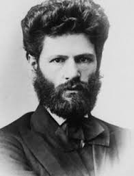
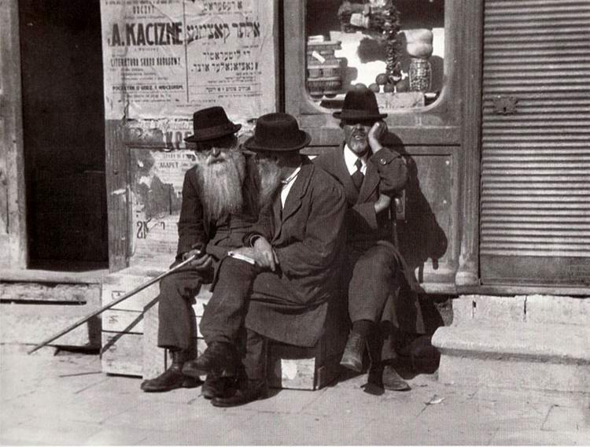
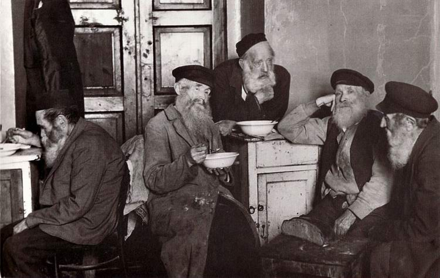
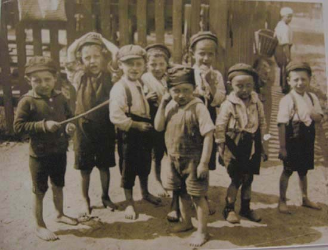
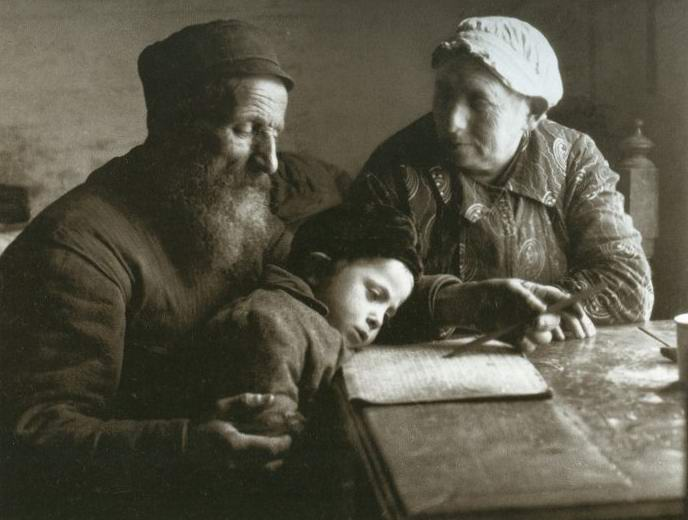
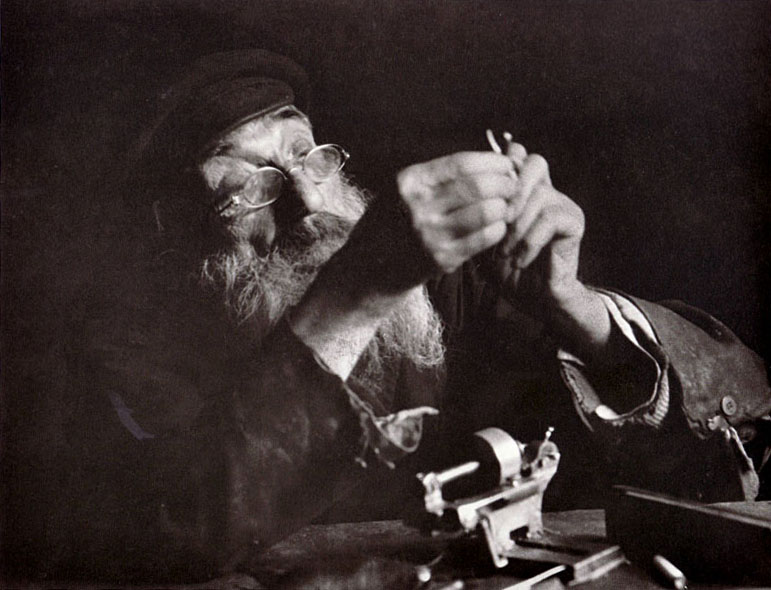
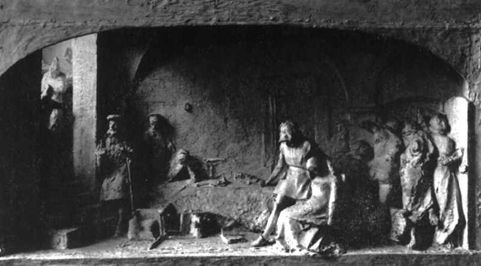
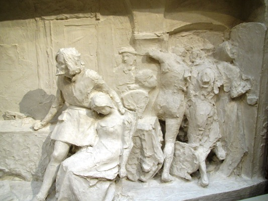
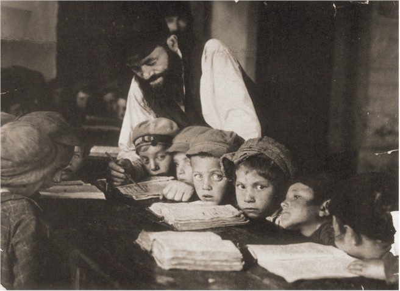

МАРК АНТОКОЛЬСКИЙ. ХРИСТОС перед судом народа. ч.I
- Я еврей и останусь им навсегда.
- Как же это, разве это вяжется с еврейством?
- Как все христиане, вы забываете происхождение вашего Христа: ведь Он же был еврей. И может ли быть что-нибудь выше Его любви к человечеству.

Марк Матве́евич Антоко́льский (Мо́рдух Ма́тысович Антоко́льский, 21 октября 1843, Вильно, Российская империя - 26 июня 1902, Франкфурт-на-Майне, Германская империя) - знаменитый скульптор-реалист, в 1871 академик, профессор скульптуры с 1880.
.
.
.
.
МАРК АНТОКОЛЬСКИЙ. ХРИСТОС перед судом народа.
Пилат говорит им: "Что же я сделаю Иисусу, называемому Христом?" Говорят ему все: "Да будет распят." Правитель сказал: "Какое же зло сделал Он?" Но они еще сильнее кричали: "Да будет распят. " Пилат, видя, что ничто не помогает, но смятение увеличивается, взял воды и умыл руки перед народом, и сказал: "Невиновен я в крови Праведника Сего; смотрите вы." И, отвечая, весь народ сказал: "Кровь Его на нас и на детях наших." (Евангелие от Матфея.)

Рим. Весна 1873 года. Марк Антокольский Стасову: "Я сделал эскиз - Христос перед судом народа. Вы удивляетесь? Представляю себе, как христиане и евреи поднимутся против меня. Евреи, наверное, скажут: "Как это он сделал Христа?" А христиане скажут: "Какого это Христа он сделал?" Но до всего этого мне дела нет. Пожалуйста, обо всем никому ни слова, только Репину." (от редактора: Христос Антокольского был изображен в облике религиозного еврея).
"Я едва понимал его ломаный язык, - пишет Илья Ефимович, - и едва мог сдерживать улыбку от коверкаемых слов. Я спросил о нем у товарищей, - кто этот иностранец? Они переглянулись: Иностранец? Да, это еврей из Вильны. И неужели некрещеный? - удивился я. Перекрестится, конечно. Ведь их вера даже не позволяет заниматься скульптурой, неужели же ему бросать искусство. А как вы смотрите на религиозное отношение евреев к пластическим искусствам? - спросил я его однажды. Я надеюсь, что это нисколько не помешает мне заниматься моим искусством, и даже служить я могу им для блага моего народа. Он принял гордую осанку и с большою решительностью во взгляде продолжал: Я еврей и останусь им навсегда. Как же это, вы только что рассказывали, как работали над Распятием Христа. Разве это вяжется с еврейством? Как все христиане, вы забываете происхождение вашего Христа: ведь Он же был еврей. И может ли быть что-нибудь выше Его любви к человечеству. Энергичные глаза Марка блеснули слезами, и он несколько таинственно произнёс: У меня намечен целый ряд сюжетов из Его жизни."
Марк Антокольский Стасову: "Мне кажется, что до сих пор никто Его так не трактовал, как я Его представляю. Ведь до сих пор христианство шло во имя Христа против Христа; до сих пор Он был в руках эксплуататоров, а теперь все, кто отрицает христианство, ближе приближаются к Нему. Дело ещё в том, что один почтенный человек из Москвы заказал мне работу с сюжетом по моему выбору, а он хочет посвятить для этого одну комнату в своем доме, для особенного впечатления и цельного освещения. Таким образом, я тут рассчитываю на целую обстановку в натуральную величину. А впрочем, обо всем этом я ещё недостаточно думал."
Почтенным человеком был Савва Мамонтов. Год назад он приехал с женой подлечиться в Италию, и они так подружились с молодым скульптором, что Савва Иванович сам начал лепить и недурно, а Марк Матвеевич, наставник его, стал организатором знаменитого Мамонтовского кружка, будущей абрамцевской кампании.
"По уму он был мыслитель, - вспоминала Елизавета Мамонтова, - и во всех его разговорах было всегда много самобытных мыслей, подымавших все новые и новые вопросы. В этих беседах, в переписке и рождался сюжет, великодушно оставленный Антокольскому на выбор."
Во-первых, ему самому не терпелось разобраться в том, как религия распяла Христа. Как могло случиться, что официальная духовная организация уничтожила цель своего существования, убила Бога? А во-вторых, он, как и всего его друзья, хотел просвещать народю. "Знаете, - говорил он Стасову, - я думаю исключительно только о русских, а также и о русских евреях, потому что никто так не нуждается в воспитании вообще, как русский еврей."


Марк Антокольский - Стасову:
"Кто не видал и не знает тех масс бедняков, оборванных и голодных евреев, которые день и ночь проводят в синагоге, где и спят на голых досках в заразительнейшей атмосфере по 40 и по 50 человек в одной комнате, кто не видал эти экзальтированные или эксцентрические лица, когда они занимаются тёмным, запутанным, но их любимым талмудом, тот не можете себе представить той среды, из которой вышла статуя Иисус."

"Детство мое, - пишет Антокольский, - слишком мрачно, да так мрачно, что я с содроганием вспоминаю. Я был нелюбимым ребенком, и мне доставалось от всех. Кто хотел, бил меня, даже прислуга; а ласкать меня - никто не ласкал. Я донашивал старые одежды, меня звали `истуканом`, `оловянные руки`. Я справлял в семействе должность рабочей лошади. Не унижала меня только мать моя".

Марк был шестым ребёнком бедного трактирщика. Как-то он нарисовал на печке водовоза с лошадью, увидев которых, отец долго топал ногами, кричал, а потом и побил юного автора. С тех пор Марк Матвеевич творил только по ночам, тайно, а за бумагу и карандаш расплачивался завтраком и обедом.
Однажды он вырезал из дерева репродукцию картины Ван Дейка `Христос и Богородица`. О нём заговорили, дошло до губернатора, и генеральша, добрая женщина, используя петербуржские связи, сумела отправить его на учёбу в Академию художеств, где он и оказался в одной комнате с Репиным; нищий, но счастливый: "Моих глиняных еврейчиков, - говорил он другу, - я имел, было, понести к фотографу, но решил, что лучше будет раньше понести свои карманы к портному. Так как я как раз получил несколько денег, то я и хотел починить карманы, чтобы иметь, где их держать. Но портной у меня забрал деньги за починку карманов, а фотограф не желал принимать вместо денег – карманы."
Илья Репин писал о нем: "Душа его была искренна и непосредственна. Один Стасов поддерживал Антокольского в его поруганном, униженном и оскорбленном мире еврейства. Стасова он понимал и благоговел перед ним, как перед отцом духовным. Смелый полет благородного альтруизма в Стасове и обожание им реального национального искусства окрыляли Анткольского и вдохновляли его. Живая жизнь и особенно близкая история его трагической народности, безотрадная судьба его родного племени, наполняли его душу высоким драматизмом. Его идеи в искусстве были – его сердце, его кровь."

Стасов: "Надеюсь все вы хорошо видели и знаете его статуэтку из дерева – еврея, вдевающего нитку в иголку? Какова вещица? Небольшая по размеру, но достаточно велика, чтобы увлечь на настоящую дорогу всю новую скульптуру."
Больше всего Владимир Васильевич полюбил Антокольского за горельеф «Нападение инквизиции на евреев в Испании во время тайного празднования ими Пасхи».
(об отношении инквизиции к евреям см. Еврейкая Энц.)


«Я был поражен», - пишет Репин о своем первом впечатлении о «нападении инквизиции», - я начал различать фигуры, полные драматизма и таинственности. Мне становилось жутко. Я долго стоял, как окаменелый, молча. Мы все задумывались, как быть дальше, как сохранить этот невиданный опыт в скульптуре. Что делать с мокрой глиной, которая стала высыхать от движения воздуха и разваливаться. Она лепилась даже без каркаса». Решено было сфотографировать композицию. Но пятьдесят премиальных рублей, полученных за нее, как раз и ушли на починку карманов. Наверное, Стасов потом помог. Ему одному, уже работая над статуей Христа, Антокольский рассказал о событиях, побудивших его к созданию инквизиции.
Антокольский – Стасову: "Кажется, это было в пятьдесят первом году: евреи вдруг получили всемилостивейший указ – давать рекрутов. Надо было поймать такого человека, у которого нет паспорта. Трудно передать вам то отчаяние, крики стоны, которые раздались из уст бедных, беззащитных матерей, у которых отнимали их детей, да еще порой таких, каким не было и семи лет. Вот наша соседка – вдова портниха, уберегла из всего семейства только одного сына, худого и слабого мальчика с большими глазами. Как она берегла его, как тряслась над ним. Но его вырвали от нее живого. А потом она все лежала и плакала: то чуется ей, что он стоит в ночную вьюгу в поле на часах, то кажется ей, что его бьют, – ой пташечка моя, голубчик мой, его розгами, кровь льется, ой за что... Но не долго она томилась. Умерла раньше времени одинокая, без утешения, без надежд, но с верой, с любовью."

Марка прятал у себя один христианин. Выйдя из убежища, когда набор прошел, он еще застал сцену проводов. Среди общей суматохи офицер скомандовал: «В поход!». Повозки тронулись и вопли, перемешанные с поцелуями еще более усилились, но вдруг кто-то закричал: «Раввин приехал!» Точно электрическая струя пробежала и из каждой груди вырвался один и тот же звук: «Спросите у наших предков, за что мы так страдаем». И ничем нельзя было удержать эти отчаянные, дикие крики, точно напор прорвал где-то клапан. Все плакали. Раввин плакал. И я плакал.
Самые ужасные, самые поражающие вещи, если они совершаются перед нами каждый день, - мы привыкаем к этому и становимся равнодушными. В самом деле, сделайте сравнение, возьмите факт убиения младенцев и тот факт, что я сейчас рассказывал. Спрашивается, что лучше для бедной и верующей матери – то, что детя ее теперь находится на небе, превратилось в ангела? Или постоянно чувствовать, что его мучат, что оно завет ее также, как она его, но между ними бездна...
продолжение см. здесь
см. также статью "Тернии и звезды МАРКА АНТОКОЛЬСКОГО"